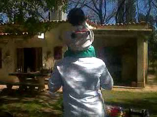

Estaba decidido a crecer y encontrar mi camino. Siempre me gustó dibujar, pero la vida me llevó por otros rumbos, dejando ese talento un poco guardado.
Con el tiempo, formé mi familia con mucho amor y esfuerzo, y mi hija es la luz que me impulsa a seguir adelante cada día.
Las computadoras y la programación entraron en mi vida como un mundo nuevo que me fascinó desde el primer momento. Cada línea de código, cada proyecto, me atraparon con una pasión que no quiero soltar.
Trabajo para mejorar, aprender y construir algo propio, con la esperanza de que algún día pueda compartir todo lo que sé y ayudar a otros, quizás siendo instructor y alcanzando a muchas personas que, como yo, buscan crecer y transformar su vida a través del aprendizaje.
Inicio
Infancia
Adolescencia